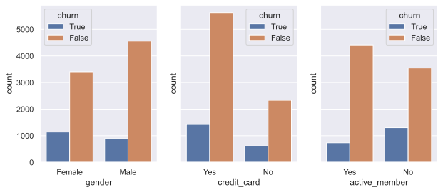

Bank customer churn EDA
Contents
Bank customer churn EDA#
Install and import required libraries#
!pip install matplotlib
!pip install pandas
!pip install seaborn
# setup
import matplotlib.pyplot as plt
import numpy as np
import pandas as pd
import seaborn as sns
sns.set()
%config InlineBackend.figure_format = 'svg'
Defaulting to user installation because normal site-packages is not writeable
Requirement already satisfied: matplotlib in /home/lordaris/.local/lib/python3.10/site-packages (3.5.2)
Requirement already satisfied: numpy>=1.17 in /usr/lib/python3.10/site-packages (from matplotlib) (1.23.3)
Requirement already satisfied: fonttools>=4.22.0 in /home/lordaris/.local/lib/python3.10/site-packages (from matplotlib) (4.33.3)
Requirement already satisfied: packaging>=20.0 in /usr/lib/python3.10/site-packages (from matplotlib) (21.3)
Requirement already satisfied: pillow>=6.2.0 in /usr/lib/python3.10/site-packages (from matplotlib) (9.2.0)
Requirement already satisfied: python-dateutil>=2.7 in /usr/lib/python3.10/site-packages (from matplotlib) (2.8.2)
Requirement already satisfied: cycler>=0.10 in /home/lordaris/.local/lib/python3.10/site-packages (from matplotlib) (0.11.0)
Requirement already satisfied: kiwisolver>=1.0.1 in /home/lordaris/.local/lib/python3.10/site-packages (from matplotlib) (1.4.2)
Requirement already satisfied: pyparsing>=2.2.1 in /usr/lib/python3.10/site-packages (from matplotlib) (3.0.9)
Requirement already satisfied: six>=1.5 in /usr/lib/python3.10/site-packages (from python-dateutil>=2.7->matplotlib) (1.16.0)
Defaulting to user installation because normal site-packages is not writeable
Requirement already satisfied: pandas in /home/lordaris/.local/lib/python3.10/site-packages (1.4.2)
Requirement already satisfied: pytz>=2020.1 in /usr/lib/python3.10/site-packages (from pandas) (2022.1)
Requirement already satisfied: python-dateutil>=2.8.1 in /usr/lib/python3.10/site-packages (from pandas) (2.8.2)
Requirement already satisfied: numpy>=1.21.0 in /usr/lib/python3.10/site-packages (from pandas) (1.23.3)
Requirement already satisfied: six>=1.5 in /usr/lib/python3.10/site-packages (from python-dateutil>=2.8.1->pandas) (1.16.0)
Defaulting to user installation because normal site-packages is not writeable
Requirement already satisfied: seaborn in /home/lordaris/.local/lib/python3.10/site-packages (0.11.2)
Requirement already satisfied: numpy>=1.15 in /usr/lib/python3.10/site-packages (from seaborn) (1.23.3)
Requirement already satisfied: scipy>=1.0 in /usr/lib/python3.10/site-packages (from seaborn) (1.9.1)
Requirement already satisfied: matplotlib>=2.2 in /home/lordaris/.local/lib/python3.10/site-packages (from seaborn) (3.5.2)
Requirement already satisfied: pandas>=0.23 in /home/lordaris/.local/lib/python3.10/site-packages (from seaborn) (1.4.2)
Requirement already satisfied: pyparsing>=2.2.1 in /usr/lib/python3.10/site-packages (from matplotlib>=2.2->seaborn) (3.0.9)
Requirement already satisfied: pillow>=6.2.0 in /usr/lib/python3.10/site-packages (from matplotlib>=2.2->seaborn) (9.2.0)
Requirement already satisfied: fonttools>=4.22.0 in /home/lordaris/.local/lib/python3.10/site-packages (from matplotlib>=2.2->seaborn) (4.33.3)
Requirement already satisfied: python-dateutil>=2.7 in /usr/lib/python3.10/site-packages (from matplotlib>=2.2->seaborn) (2.8.2)
Requirement already satisfied: cycler>=0.10 in /home/lordaris/.local/lib/python3.10/site-packages (from matplotlib>=2.2->seaborn) (0.11.0)
Requirement already satisfied: packaging>=20.0 in /usr/lib/python3.10/site-packages (from matplotlib>=2.2->seaborn) (21.3)
Requirement already satisfied: kiwisolver>=1.0.1 in /home/lordaris/.local/lib/python3.10/site-packages (from matplotlib>=2.2->seaborn) (1.4.2)
Requirement already satisfied: pytz>=2020.1 in /usr/lib/python3.10/site-packages (from pandas>=0.23->seaborn) (2022.1)
Requirement already satisfied: six>=1.5 in /usr/lib/python3.10/site-packages (from python-dateutil>=2.7->matplotlib>=2.2->seaborn) (1.16.0)
df = pd.read_csv("data/Bank_Customer_Churn_Prediction.csv")
Data Exploration#
Feature description#
df.columns
Index(['customer_id', 'credit_score', 'country', 'gender', 'age', 'tenure',
'balance', 'products_number', 'credit_card', 'active_member',
'estimated_salary', 'churn'],
dtype='object')
df.dtypes
customer_id int64
credit_score int64
country object
gender object
age int64
tenure int64
balance float64
products_number int64
credit_card int64
active_member int64
estimated_salary float64
churn int64
dtype: object
Feature name |
Feature description |
|---|---|
customer_id |
self descriptive |
credit_score |
creditworthiness |
country |
self descriptive |
gender |
self descriptive |
age |
self descriptive |
tenure |
The length of time an account has been a customer or active user |
balance |
amount of money present in the bank |
products_number |
number of products from the bank |
credit_card |
shows if the customer owns a credit card |
active_member |
shows if the customer is an active member of the bank |
estimated_salary |
estimated income of the customer |
churn |
True indicates that the bank eventually lost the customer |
df.describe().T
| count | mean | std | min | 25% | 50% | 75% | max | |
|---|---|---|---|---|---|---|---|---|
| customer_id | 10000.0 | 1.569094e+07 | 71936.186123 | 15565701.00 | 15628528.25 | 1.569074e+07 | 1.575323e+07 | 15815690.00 |
| credit_score | 10000.0 | 6.505288e+02 | 96.653299 | 350.00 | 584.00 | 6.520000e+02 | 7.180000e+02 | 850.00 |
| age | 10000.0 | 3.892180e+01 | 10.487806 | 18.00 | 32.00 | 3.700000e+01 | 4.400000e+01 | 92.00 |
| tenure | 10000.0 | 5.012800e+00 | 2.892174 | 0.00 | 3.00 | 5.000000e+00 | 7.000000e+00 | 10.00 |
| balance | 10000.0 | 7.648589e+04 | 62397.405202 | 0.00 | 0.00 | 9.719854e+04 | 1.276442e+05 | 250898.09 |
| products_number | 10000.0 | 1.530200e+00 | 0.581654 | 1.00 | 1.00 | 1.000000e+00 | 2.000000e+00 | 4.00 |
| credit_card | 10000.0 | 7.055000e-01 | 0.455840 | 0.00 | 0.00 | 1.000000e+00 | 1.000000e+00 | 1.00 |
| active_member | 10000.0 | 5.151000e-01 | 0.499797 | 0.00 | 0.00 | 1.000000e+00 | 1.000000e+00 | 1.00 |
| estimated_salary | 10000.0 | 1.000902e+05 | 57510.492818 | 11.58 | 51002.11 | 1.001939e+05 | 1.493882e+05 | 199992.48 |
| churn | 10000.0 | 2.037000e-01 | 0.402769 | 0.00 | 0.00 | 0.000000e+00 | 0.000000e+00 | 1.00 |
df.nunique()
customer_id 10000
credit_score 460
country 3
gender 2
age 70
tenure 11
balance 6382
products_number 4
credit_card 2
active_member 2
estimated_salary 9999
churn 2
dtype: int64
some insights:
customer_id have unique values in each row,
gender, credit_card, active_member and churn are binary data values
df.isnull().sum()
customer_id 0
credit_score 0
country 0
gender 0
age 0
tenure 0
balance 0
products_number 0
credit_card 0
active_member 0
estimated_salary 0
churn 0
dtype: int64
df.drop("customer_id", axis=1, inplace=True)
Exploratory Data Analysis#
Whole dataset visualization#
plt.rcParams['figure.figsize'] = (10,10)
df.hist()
array([[<AxesSubplot:title={'center':'credit_score'}>,
<AxesSubplot:title={'center':'age'}>,
<AxesSubplot:title={'center':'tenure'}>],
[<AxesSubplot:title={'center':'balance'}>,
<AxesSubplot:title={'center':'products_number'}>,
<AxesSubplot:title={'center':'credit_card'}>],
[<AxesSubplot:title={'center':'active_member'}>,
<AxesSubplot:title={'center':'estimated_salary'}>,
<AxesSubplot:title={'center':'churn'}>]], dtype=object)
features = df.keys()
features = features.drop(["churn", "credit_card", "active_member"])
subsets = ["credit_score"]
df.groupby("churn")[features].mean()
| credit_score | age | tenure | balance | products_number | estimated_salary | |
|---|---|---|---|---|---|---|
| churn | ||||||
| 0 | 651.853196 | 37.408389 | 5.033279 | 72745.296779 | 1.544267 | 99738.391772 |
| 1 | 645.351497 | 44.837997 | 4.932744 | 91108.539337 | 1.475209 | 101465.677531 |
# Correlation with churn
df.corrwith(df["churn"])
credit_score -0.027094
age 0.285323
tenure -0.014001
balance 0.118533
products_number -0.047820
credit_card -0.007138
active_member -0.156128
estimated_salary 0.012097
churn 1.000000
dtype: float64
features = df.keys()
features = features.drop(["churn", "credit_card", "active_member"])
df.groupby("churn")[features].mean()
| credit_score | age | tenure | balance | products_number | estimated_salary | |
|---|---|---|---|---|---|---|
| churn | ||||||
| 0 | 651.853196 | 37.408389 | 5.033279 | 72745.296779 | 1.544267 | 99738.391772 |
| 1 | 645.351497 | 44.837997 | 4.932744 | 91108.539337 | 1.475209 | 101465.677531 |
# Correlation with churn
df.corrwith(df["churn"])
credit_score -0.027094
age 0.285323
tenure -0.014001
balance 0.118533
products_number -0.047820
credit_card -0.007138
active_member -0.156128
estimated_salary 0.012097
churn 1.000000
dtype: float64
figsize=(12, 4)
sns.countplot(x="churn", data=df)
<AxesSubplot:xlabel='churn', ylabel='count'>
# Diagonal correlation matrix
corr = df.corr()
mask = np.triu(np.ones_like(corr, dtype=bool))
f, ax = plt.subplots(figsize=(10,9))
sns.heatmap(corr, mask=mask, linewidths=.5, cbar_kws={"shrink": .5}, annot=True)
<AxesSubplot:>
Relationship between churn and age#
churn = df["churn"].replace({0: "False", 1: "True"}, inplace=False)
sns.boxplot(data = df, x="age", y=churn)
<AxesSubplot:xlabel='age', ylabel='churn'>
## Relationship between churn and balance
sns.boxplot(data = df, x="balance", y=churn)
<AxesSubplot:xlabel='balance', ylabel='churn'>
Relationship between churn and binary features:#
The binary features are gender, credit_card and active_member
credit_card = df["credit_card"].replace({0: "No", 1: "Yes"}, inplace=False)
active_member = df["active_member"].replace({0: "No", 1: "Yes"}, inplace=False)
_, axes = plt.subplots(1, 3, sharey=True, figsize=(10, 4))
sns.countplot(data=df, x="gender", hue=churn, ax=axes[0])
sns.countplot(data=df, x=credit_card, hue=churn, ax=axes[1])
sns.countplot(data=df, x=active_member, hue=churn, ax=axes[2]);

relationship between churn and country#
sns.countplot(data=df, x="country", hue=churn)
<AxesSubplot:xlabel='country', ylabel='count'>
numerical = df[[
"credit_score",
"age",
"tenure",
"balance",
"products_number",
"estimated_salary"]]
!pip install sklearn
from sklearn.manifold import TSNE
from sklearn.preprocessing import StandardScaler
Defaulting to user installation because normal site-packages is not writeable
Requirement already satisfied: sklearn in /usr/lib/python3.10/site-packages (0.0)
Requirement already satisfied: scikit-learn in /usr/lib/python3.10/site-packages (from sklearn) (1.1.2)
Requirement already satisfied: numpy>=1.17.3 in /usr/lib/python3.10/site-packages (from scikit-learn->sklearn) (1.23.3)
Requirement already satisfied: threadpoolctl>=2.0.0 in /usr/lib/python3.10/site-packages (from scikit-learn->sklearn) (3.1.0)
Requirement already satisfied: joblib>=1.0.0 in /usr/lib/python3.10/site-packages (from scikit-learn->sklearn) (1.1.0)
Requirement already satisfied: scipy>=1.3.2 in /usr/lib/python3.10/site-packages (from scikit-learn->sklearn) (1.9.1)
scaler = StandardScaler()
x_scaled = scaler.fit_transform(numerical)
tsne = TSNE(random_state=17)
tsne_repr = tsne.fit_transform(x_scaled)
plt.scatter(tsne_repr[:, 0], tsne_repr[:, 1], c=df["churn"].map({0: "blue", 1: "orange"}),
alpha=0.5);
/usr/lib/python3.10/site-packages/sklearn/manifold/_t_sne.py:800: FutureWarning: The default initialization in TSNE will change from 'random' to 'pca' in 1.2.
warnings.warn(
/usr/lib/python3.10/site-packages/sklearn/manifold/_t_sne.py:810: FutureWarning: The default learning rate in TSNE will change from 200.0 to 'auto' in 1.2.
warnings.warn(